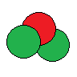

Atomic Number

The number of protons in a nucleus is called the atomic number.
- The atomic number determines which element an atom is.
- Because neutrons have no electric charge, they do not affect the chemical properties of an atom.
- The periodic table lists all known elements in order based on atomic number.
- All atoms with 1 proton are hydrogen. All atoms with 2 protons are helium.
Mass Number
The combined number of protons and neutrons is called the mass number.
- Protons and neutrons have nearly the same mass.
- Electrons have negligible mass compared to the nucleus.
- Atoms with the same atomic number but different mass number are called isotopes.
Isotopes
Isotopes are named by the element name (determined by atomic number or number protons) and the mass number (protons + neutrons).
| Atomic Number | Mass Number | Nucleus | Isotope |
|---|---|---|---|
| 1 | 1 | Hydrogen-1 | |
| 1 | 2 | Hydrogen-2 | |
| 1 | 3 |  | Hydrogen-3 |
| 2 | 3 |  | Helium-3 |
| 2 | 4 | Helium-4 |
Atoms & Ions
An atom is neutral when it has equal numbers of protons and electrons.
- The positive charge of the protons balances the negative charge of the electrons.
You cannot add or remove particles from the nucleus easily because it would require huge amounts of energy.
The electrons (which orbit outside the nucleus) often can be added or removed.
- An atom with unequal numbers of protons and electrons is called an ion.
- An ion with excess electrons has a net negative charge.
- To name a negative ion, change the element suffix to “-ide”; a negative chlorine atom is called chloride.
- Negative ions are called anions.
- An ion with missing electrons has a net positive charge. Positive ions are called cations.
- There is no name change for a cation. A sodium atom that loses an electron is just called a sodium ion.
- If the element can form more than one ion, the charge is added to the name as a Roman numeral.
- An iron atom with two missing electrons (i.e. a net charge of 2+) is called iron(II) ion.
Isotope Notation
- Write the one or two letter symbol for the element from the periodic table.
- The first letter is always capitalized; the second letter (if there is one) is lower case.
- Co (element cobalt) is different from CO (compound carbon monoxide)!
- Write the atomic number as a left subscript.
- Write the mass number as a left superscript.
- If it is an ion, write the net charge as a right superscript.
- This is an iron ion with two missing electrons.
- There are 26 protons.
- There are 24 electrons.
- There are 30 neutrons.
Your periodic table does not list all of the isotopes of each element.
- Iron has naturally-occuring isotopes with mass numbers 54, 56, 57, and 58.
- Your periodic table only gives the average mass number as 55.85.
- The mass number of a single isotope should always be a whole number.
Example 1
Write the isotope notation for an ion with 18 electrons, 16 neutrons, and a charge of 3–.
- Because the charge is \(3-\), there are three extra electrons.
- The atomic number (protons) is \(18 - 3 = 15\).
- The name of element 15 is phosphorus (P). The ion is called phosphide.
- The mass number is \(15 + 16 = 31\).
Example 2
How many of each type of particle are present in a titanium(IV) ion of the most common titanium isotope?
- There are 22 protons because the atomic number of titanium is 22.
- The most common isotope of titanium is probably titanium-48.
- The number of neutrons is \(48 - 22 = 26\).
- Because the charge is \(4+\), there are four fewer electrons than protons: \(22 - 4 = 18\).